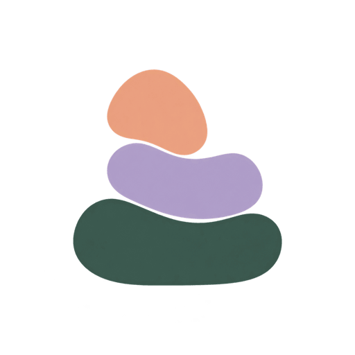

01 / SPACE
우리의 공간.
두 사람이 함께 쓰는 공간이에요. 혼자 먼저 시작하고, 나중에 상대를 초대할 수 있어요.
지금 운영 중 · 웹에서 바로
포개는 두 사람이 함께한 시간, 사진,
추억과 대화를 기록하는 서비스예요.
Apple이나 Google 계정으로 시작해요. 출시 기간에는 모든 기능이 무료입니다.

사진 · 추억 · 대화를
한 곳에 포개어
함께한 날을 쌓는 방법
두 사람의 공간을 만들고, 사진을 남기고,
지나온 날을 함께 세어 보세요.
두 사람이 함께 쓰는 공간이에요. 혼자 먼저 시작하고, 나중에 상대를 초대할 수 있어요.
사진 다이어리로 그날을 남기세요. 쌓인 추억을 다시 보고, 고른 기록은 월간 페이지 한 장으로 저장할 수 있어요.
함께한 날, 결혼한 지, 결혼까지, 다가오는 날. 컬러 블록 테마에서는 홈에 표시할 카드를 직접 고를 수 있어요.
공간 안에서 이어지는 것들
함께 남기는 것과 혼자 간직하는 것을
한 공간 안에서 나눠 두었어요.
테마는 내 화면에만 적용되고, 상대 화면에는 영향을 주지 않아요.
공간 안에서 둘이 주고받는 메시지예요. 사진도 함께 보낼 수 있어요.
아이의 이름과 생일을 등록하고, 성장 기록을 남겨요.
기념일을 추가해 두면 다가오는 날을 알려 줘요.
연결을 종료해도 내가 쓴 글과 보낸 메시지, 직접 올린 사진은 나만 보는 보관함에 남아요.
POGAE FOR WEB & APP
포개는 웹에서 운영 중이에요. 설치 없이 브라우저에서 바로 시작하고,
홈 화면에 추가해 앱처럼 쓸 수 있어요. 아이폰과 안드로이드 앱은 준비하고 있습니다.
운영 중웹 · PWA
준비 중iPhone · Android 앱
기기 푸시 알림은 앱 출시 후에 제공합니다.
pogae.paldyn.com에서 Apple이나 Google 계정으로 계속하면 바로 시작할 수 있어요. 혼자 먼저 공간을 만들고, 나중에 상대를 초대해도 괜찮아요.
출시 기간에는 모든 기능을 무료로 쓸 수 있어요. 광고를 띄우거나 결제를 요구하지 않습니다.
아이폰과 안드로이드 앱은 준비 중이에요. 지금은 웹에서 쓸 수 있고, 홈 화면에 추가하면 앱처럼 사용할 수 있어요. 기기 푸시 알림은 앱 출시 후에 제공합니다.
올린 사진은 비공개 저장소에 보관해요.
아니요. 화면 꾸미기에서 고른 테마는 내 화면에만 적용되고, 상대 화면에는 영향을 주지 않아요.